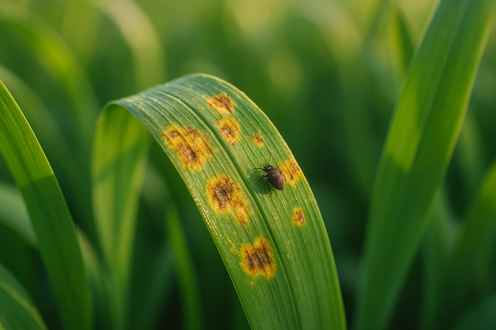
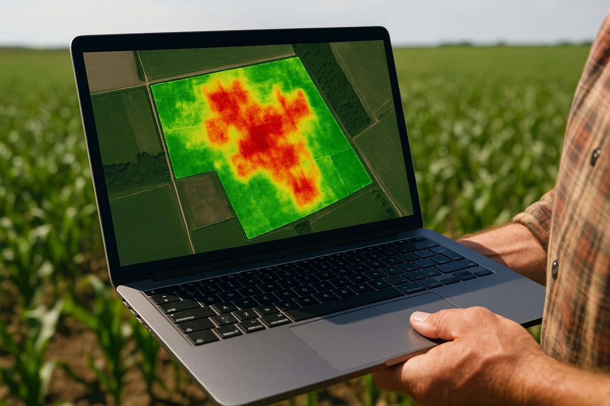

Crop Protection Intelligence
From water optimization to full crop protection
The same AI engine that manages your irrigation now detects pest threats before they spread.



Pest Detection Map
Live
North Block A — Wheat Field
Healthy
Watch zone
Pest detected
Pest Alert
Aphid infestation detected in 2 zones (NE corner). Targeted spray recommended within 48h — 94% confidence.
✓ Est. pesticide reduction vs. full-field spray: 58%
Early pest detection
Drone-mounted multispectral cameras identify pest stress signatures in crop canopy up to 10 days before visible damage.
Targeted intervention maps
AI generates precise field maps showing exactly where to spray, reducing chemical usage and cost by up to 60%.
Integrated alerts
Pest risk alerts arrive in the same app, alongside your irrigation recommendations — one platform for complete crop health.